BLUE TEAM • SECURITY OPERATIONS • DETECTION ENGINEERING
Blue Team Operations &
Detection Engineering
Built a centralized Windows monitoring environment using Advanced Audit Policy, Windows Event Forwarding, Sysmon, PowerShell, and custom Event Viewer detections to investigate authentication, identity, process, and discovery activity.
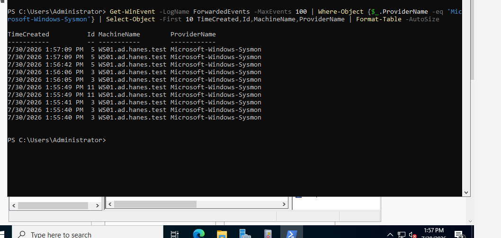
01 — OVERVIEW
Project Overview
This project documents the defensive-security layer built on top of the ad.hanes.test Windows domain. The environment was extended beyond infrastructure and hardening to provide centralized security visibility, investigation capability, and targeted detection.
Advanced Windows auditing generated security-relevant telemetry on WS01. Windows Event Forwarding transported those events to DC01, creating a central location for reviewing endpoint activity without connecting directly to the workstation.
Microsoft Sysmon then expanded endpoint visibility with detailed process, command-line, parent-process, network, and file telemetry. PowerShell queries and custom Event Viewer views were used to investigate and refine detections for failed logons, account changes, group membership changes, and administrative discovery activity.
02 — ENVIRONMENT
Monitoring Architecture
SOURCE ENDPOINT
WS01
Windows 11 workstation generating Windows Security and Sysmon telemetry for centralized collection and investigation.
EVENT COLLECTOR
DC01
Windows Server domain controller configured as the centralized Windows Event Collector and investigation workstation.
TELEMETRY PIPELINE
WEF + Sysmon
Windows Event Forwarding transported native Windows and enhanced Sysmon telemetry from WS01 to DC01.
03 — METHODOLOGY
Detection Workflow
Enable Security Auditing
Configured Advanced Audit Policy through Group Policy to generate authentication, account, logon, and process events.
Centralize Windows Events
Implemented Windows Event Forwarding from WS01 to the Forwarded Events log on DC01.
Validate Identity Monitoring
Generated and analyzed failed logons, user account creation, and security-enabled local group changes.
Deploy Enhanced Telemetry
Installed Sysmon on WS01 and forwarded its operational events to DC01.
Investigate Process Activity
Queried centralized Sysmon Event ID 1 telemetry with PowerShell to extract process and command-line details.
Develop Targeted Detections
Built broad and targeted Event Viewer detections for PowerShell execution and administrative discovery behavior.
04 — EVIDENCE
Technical Walkthrough
STEP 01
Advanced Audit Policy
I configured Advanced Audit Policy through Group Policy to generate security-relevant telemetry across the domain environment.
Auditing was enabled for Account Logon, Account Management, Detailed Tracking, and Logon/Logoff. These categories provide visibility into authentication, identity changes, process creation, and user session activity.
This established the native Windows telemetry foundation required for centralized monitoring and later detection engineering.
Audit Policy Coverage
Advanced Audit Policy
│
├── Account Logon
│ └── Authentication Activity
│
├── Account Management
│ └── User & Group Changes
│
├── Detailed Tracking
│ └── Process Creation Activity
│
└── Logon/Logoff
└── User Session Activity
Deployment: Group Policy
Environment: ad.hanes.test
Purpose: Security Monitoring & Detection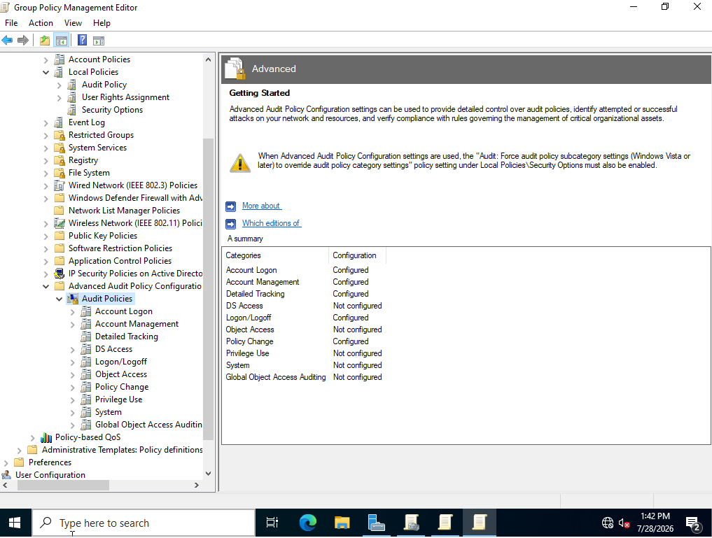
Advanced Audit Policy generated authentication, account-management, process-tracking, and logon telemetry across the Windows environment.
STEP 02
Centralized Logging with Windows Event Forwarding
I implemented Windows Event Forwarding to collect security events from WS01 on DC01.
Relevant endpoint events were forwarded into the Forwarded Events log, creating a centralized location for monitoring and investigation.
Successful collection was validated in Event Viewer using Windows security telemetry generated by the workstation.
Collection Architecture
WS01
│
├── Windows Security Log
├── Advanced Audit Policy
└── Security Events
│
│ Windows Event Forwarding
▼
DC01
│
└── Forwarded Events
├── Centralized Telemetry
└── Security Investigation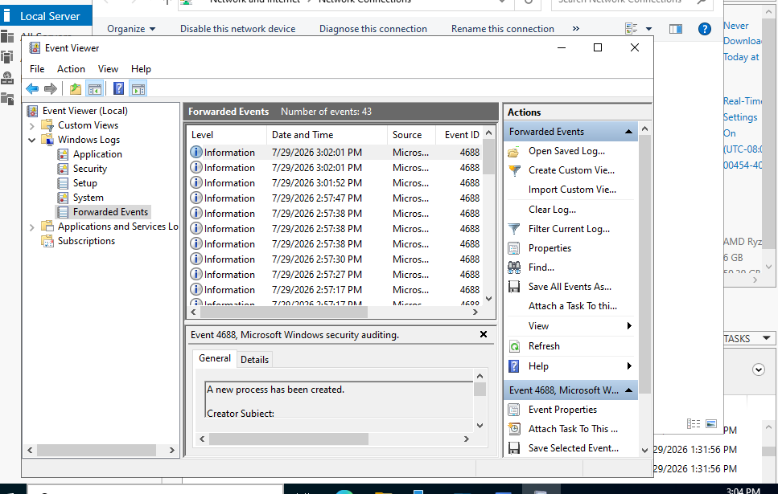
DC01 successfully collected Windows security events generated by WS01 through Windows Event Forwarding.
STEP 03
Failed Logon Detection & Investigation
I generated controlled failed authentication attempts from WS01 to test the centralized monitoring workflow.
Windows recorded the activity as Event ID 4625. I queried the centralized event data with PowerShell and created a custom Event Viewer view named Failed Logon Detection - WS01.
This demonstrated a complete workflow from activity generation and collection to targeted analysis and repeatable detection.
Detection Workflow
Failed Authentication Attempt
│
▼
WS01 Security Log
│
│ Event ID 4625
▼
Windows Event Forwarding
│
▼
DC01 - Forwarded Events
│
├── PowerShell Query
└── Custom Event View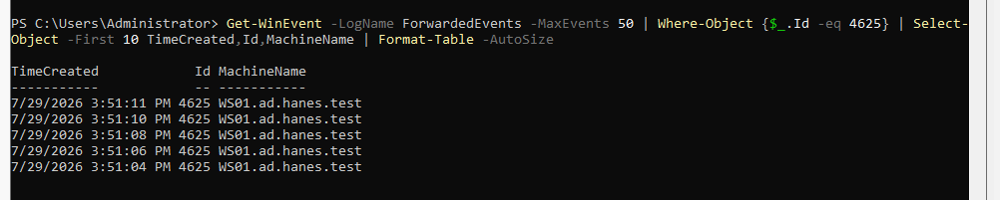
PowerShell was used on DC01 to identify centralized Event ID 4625 records originating from WS01.

A custom Event Viewer view provided a repeatable method for reviewing failed authentication activity from WS01.
STEP 04
Expanded Identity & Access Monitoring
I expanded centralized detection beyond failed authentication to cover account lifecycle and access-control activity.
Event ID 4720 identified user account creation, while Event ID 4732 identified a member being added to a security-enabled local group.
Both events were collected on DC01 through the same Windows Event Forwarding architecture used for failed-logon monitoring.
Identity Detection Coverage
Event ID 4625
└── Failed Logon
Event ID 4720
└── User Account Created
Event ID 4732
└── Member Added to Security-Enabled Local Group
Source Endpoint: WS01
Collector: DC01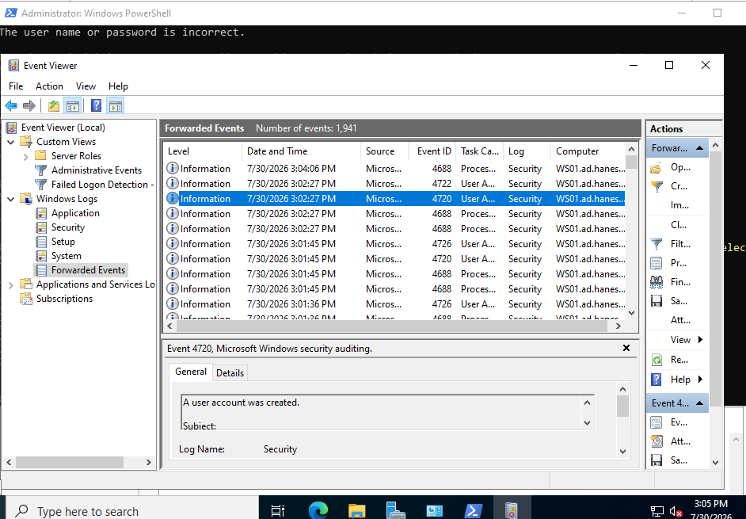
Event ID 4720 provided centralized visibility into user account creation on WS01.
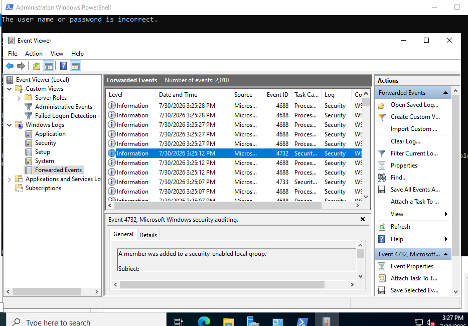
Event ID 4732 provided centralized visibility into security group membership and access-control changes.
STEP 05
Sysmon Deployment & Centralized Endpoint Telemetry
I deployed Microsoft Sysmon on WS01 using a custom configuration to capture enhanced endpoint activity.
Sysmon Event ID 1 provided process image, command-line, user, hash, and parent-process context. Additional telemetry included network connections, process termination, and file creation.
The Sysmon Operational log was integrated with Windows Event Forwarding, allowing enhanced endpoint events to be collected centrally on DC01.
Endpoint Telemetry Workflow
WS01 Endpoint Activity
│
▼
Microsoft Sysmon
│
├── Event ID 1 - Process Creation
├── Event ID 3 - Network Connection
├── Event ID 5 - Process Termination
└── Event ID 11 - File Creation
│
▼
Windows Event Forwarding
│
▼
DC01 - Forwarded Events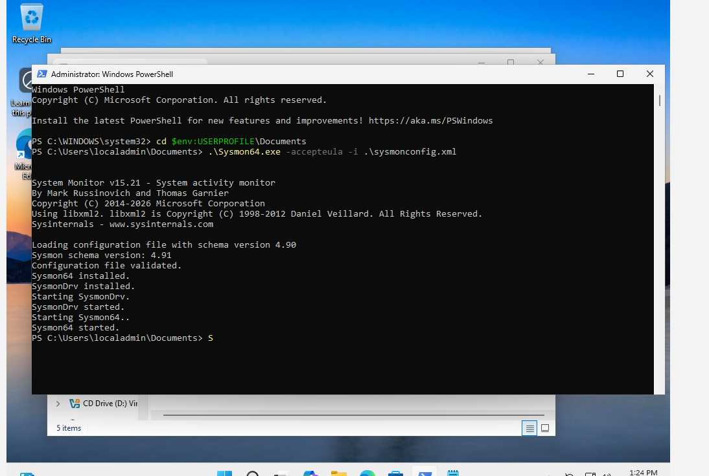
Sysmon was successfully installed and configured on WS01.
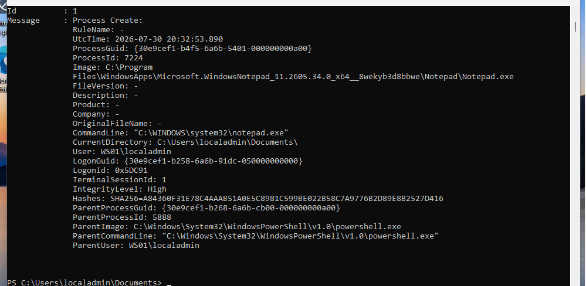
Sysmon Event ID 1 captured detailed process-creation and command-line telemetry.
Sysmon events from WS01 were successfully collected in the Forwarded Events log on DC01.
STEP 06
PowerShell Detection & Investigation
I used PowerShell on DC01 to query centralized Sysmon Event ID 1 telemetry and extract the originating workstation, process image, command line, user, and parent process.
I then generated administrative discovery using Get-LocalGroupMember Administrators. Sysmon captured the complete PowerShell command line and Windows Event Forwarding transported it to DC01.
A broad custom view named PowerShell Detection - WS01 was created first. The logic was then refined into PowerShell Discovery Detection - WS01 to isolate the targeted discovery behavior.
Detection Engineering Workflow
PowerShell Activity - WS01
│
▼
Sysmon Event ID 1
│
├── Image
├── CommandLine
├── User
└── ParentImage
│
▼
DC01 - Forwarded Events
│
├── PowerShell Investigation
├── Broad PowerShell Detection
└── Targeted Discovery Detection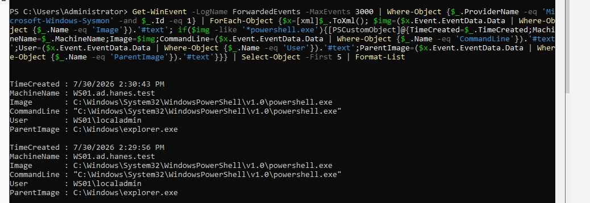
Centralized Sysmon process telemetry was queried with PowerShell for investigation.
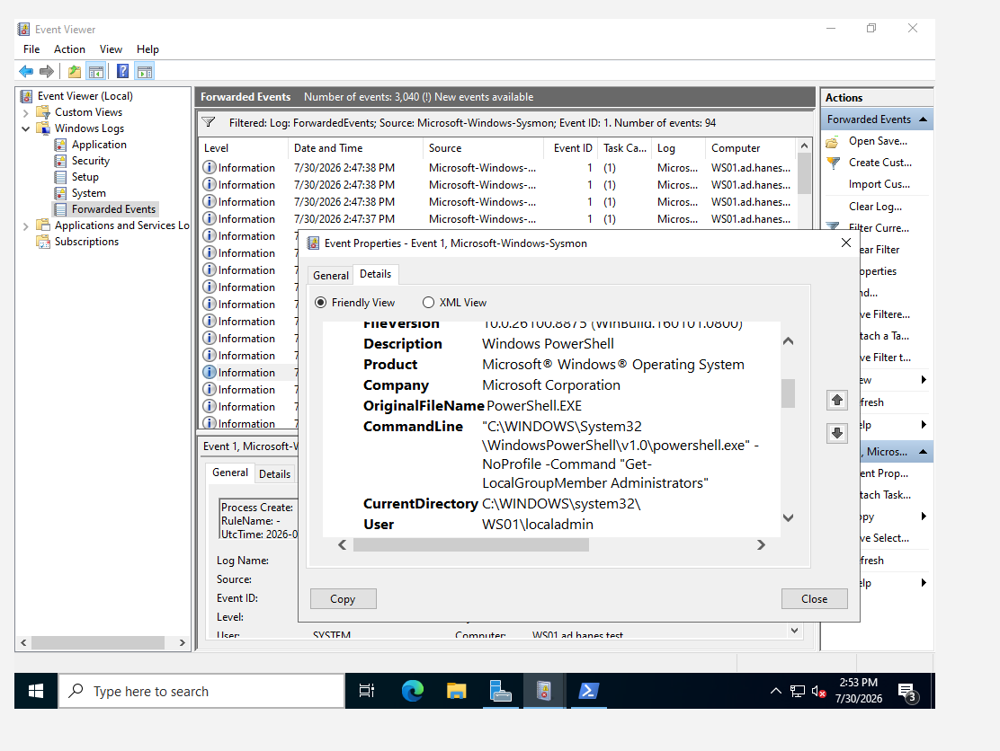
The complete Get-LocalGroupMember Administrators command was visible in centralized Sysmon telemetry.
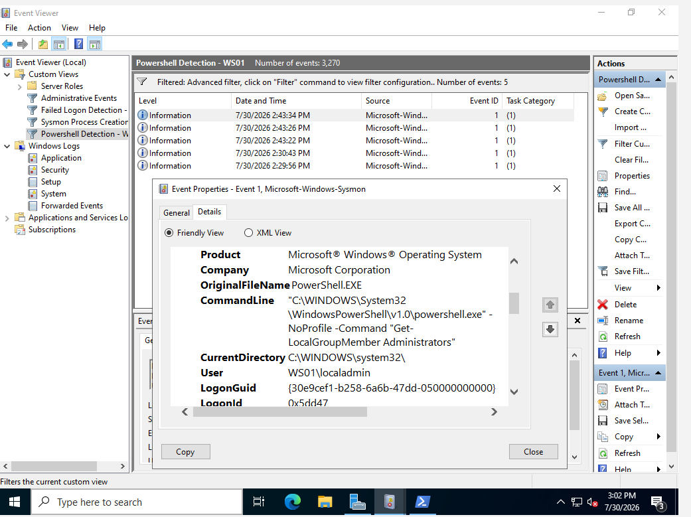
A broad custom Event Viewer view isolated PowerShell process creation from WS01.
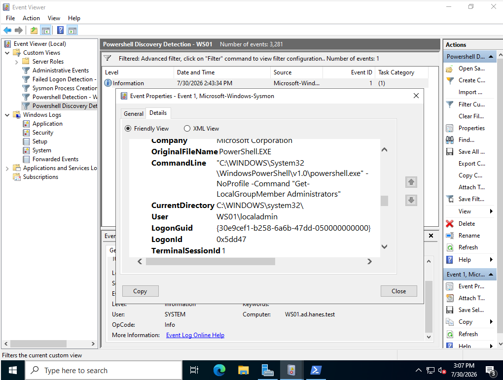
The detection was refined to isolate local administrator-group discovery.
DETECTION STEP 07
SMB Authentication Failure Detection
During the Offensive Security engagement, controlled SMB authentication attempts were performed against DC01, WS01, and FS01 using NetExec and intentionally invalid credentials.
The failed authentication activity generated Windows Security Event ID 4625, allowing the offensive action to be investigated from the defender's perspective.
The event details identified the attempted account ecarter, the ad.hanes.test domain, a network-based Logon Type 3, and the NTLM authentication package.
The status and failure-reason fields confirmed that the supplied credentials were rejected. This demonstrated that the monitoring environment could capture and expose authentication activity generated during an authorized penetration test.
Detection Correlation
NetExec SMB Authentication Test
│
▼
Invalid Credentials Submitted
│
▼
Windows Security Event ID 4625
│
├── TargetUserName: ecarter
├── TargetDomainName: ad.hanes.test
├── FailureReason: %%2313
├── LogonType: 3
└── AuthenticationPackageName: NTLM
│
▼
Centralized Blue Team InvestigationRELATED OFFENSIVE ACTIVITY
This detection was generated during Enterprise Step 05 — SMB Authentication Testing in the Offensive Security & Penetration Testing project.
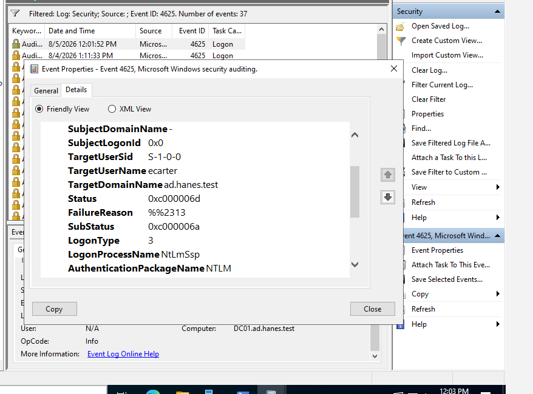
Windows Security Event ID 4625 captured the failed SMB authentication attempt against the ecarter account, including the target domain, failure status, network logon type, and NTLM authentication package.
DETECTION STEP 08
Advanced Audit Policy Configuration
To expand Windows monitoring beyond authentication events, I configured Advanced Audit Policy settings through Group Policy to enable detailed Object Access auditing across the enterprise environment.
After updating the Group Policy Object, I forced an immediate policy refresh using gpupdate /force and verified that the new auditing configuration had been successfully applied.
Verification confirmed that File System auditing, File Share auditing, Detailed File Share auditing, and Other Object Access Events were configured for Success and Failure logging, preparing the environment to generate detailed security telemetry during file access activity.
Verification Commands
gpupdate /force
auditpol /get /category:"Object Access"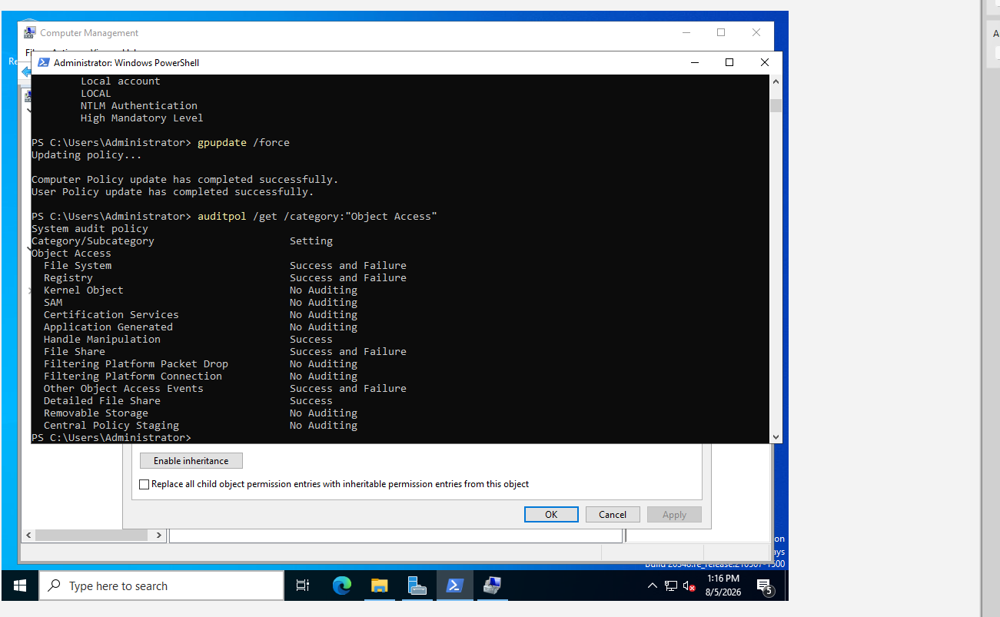
Group Policy was successfully updated and Advanced Audit Policy verification confirmed Object Access, File Share, and Detailed File Share auditing were enabled.
DETECTION STEP 09
Detailed File Share Access Monitoring
After enabling Advanced Audit Policy, I validated the new logging configuration by generating file share activity and reviewing the resulting Windows Security events.
Windows Security Event ID 5145 confirmed that the operating system was auditing network file share access requests. The event captured the requesting user account, access attempt, target computer, and additional context useful during forensic investigations.
This validation demonstrated that the environment could monitor file share activity beyond authentication events, providing additional visibility into user behavior and potential unauthorized access attempts.
Detection Workflow
Advanced Audit Policy
│
▼
Group Policy Applied
│
▼
User Accesses Network Share
│
▼
Windows Security Event ID 5145
│
▼
Blue Team InvestigationBLUE TEAM CAPABILITY
Event ID 5145 provides visibility into network share access, enabling defenders to investigate user activity, suspicious file access, and lateral movement involving Windows file shares.
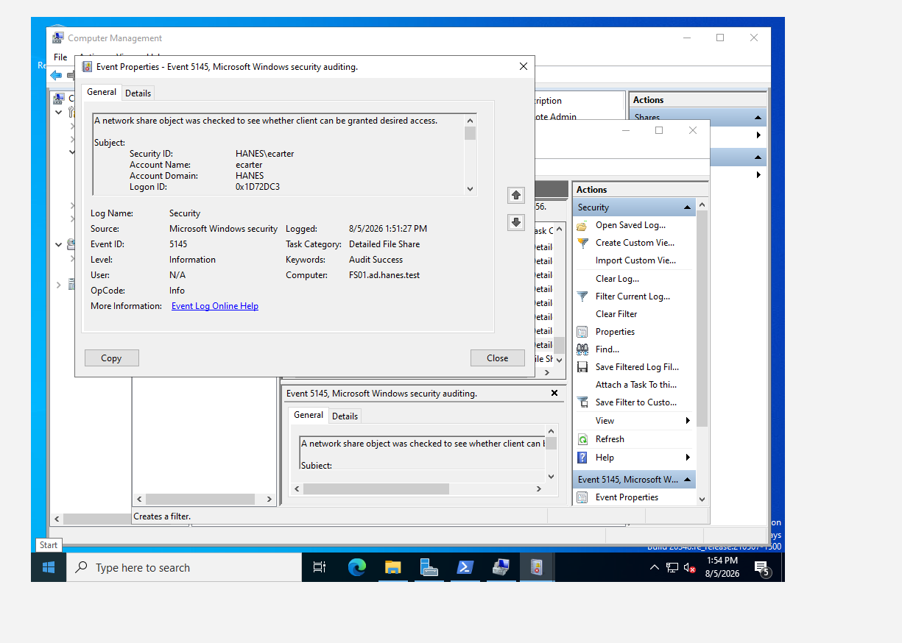
Windows Security Event ID 5145 confirmed that Detailed File Share auditing was functioning correctly and successfully recorded network file share access activity.
05 — TROUBLESHOOTING
Troubleshooting & Problem Solving
Extending the environment with Sysmon introduced a Windows Event Forwarding issue that required validation across the endpoint, collector, services, permissions, and subscription state.
ISSUE 01
Windows Event Forwarding & Sysmon Collection
The WS01 event source entered a Trying state and returned a WSMan connectivity error. An initial Sysmon log query on DC01 also failed because Sysmon was installed on the source endpoint rather than the collector.
I validated WinRM on DC01, tested WSMan connectivity from WS01, confirmed WinRM and Sysmon64 were running on the endpoint, and reviewed event-log access permissions.
After correcting the forwarding configuration, I revalidated the subscription with wecutil. The subscription and WS01 event source both returned RuntimeStatus: Active and LastError: 0.
Problem
WS01 remained in a Trying state with a WSMan connectivity failure.
Action
Validated services, connectivity, permissions, endpoint telemetry, and collector roles.
Validation
Confirmed RuntimeStatus Active and LastError 0 after correcting the forwarding configuration.
Troubleshooting Workflow
WEC / Sysmon Collection Issue
│
▼
Review Subscription
│
├── RuntimeStatus: Trying
└── WSMan Connectivity Error
│
▼
Validate DC01
└── WinRM Running
│
▼
Validate WS01
├── Test-WSMan DC01
├── WinRM Running
├── Sysmon64 Running
└── Event Log Permissions
│
▼
Correct Configuration
│
▼
RuntimeStatus: Active
LastError: 0
Initial validation exposed the WSMan connectivity and Sysmon-channel issues.

Collector-side validation confirmed WinRM was running on DC01 and clarified the collector's role.

Endpoint validation confirmed WSMan connectivity, running services, and event-log access configuration.

Final validation showed the subscription and WS01 source active with LastError 0.
06 — SECURITY OUTCOMES
Defensive Security Outcomes
The completed environment demonstrates the progression from telemetry generation and centralization to investigation and targeted detection engineering.
AUDITING
Security Event Generation
Enabled advanced Windows auditing for authentication, identity, logon, and process activity.
LOG MANAGEMENT
Centralized Event Collection
Implemented Windows Event Forwarding from WS01 to DC01.
IDENTITY MONITORING
Authentication & Account Detection
Monitored Event IDs 4625, 4720, and 4732 for failed logons and identity/access changes.
ENDPOINT VISIBILITY
Centralized Sysmon Telemetry
Collected enhanced process, network, and file activity from the endpoint.
INVESTIGATION
Centralized Process Analysis
Queried process image, command line, user, and parent-process details with PowerShell.
DETECTION ENGINEERING
PowerShell Discovery Detection
Built and refined detections for targeted administrative discovery activity.
ATTACK CORRELATION
SMB Authentication Detection
Correlated NetExec authentication testing with Windows Security Event ID 4625 to connect offensive activity with centralized defensive investigation.
AUDITING
Advanced Audit Policy
Configured and verified Advanced Audit Policy settings to expand Windows security telemetry beyond authentication events.
OBJECT ACCESS
File Share Monitoring
Validated Event ID 5145 generation to monitor network file share activity and improve investigative visibility.
07 — SKILLS DEMONSTRATED
Technical Skills Demonstrated
This project required working across Windows telemetry, event collection, endpoint visibility, investigation, detection design, and troubleshooting.
LOGGING
Windows Event Forwarding
Configured and validated centralized Windows event collection.
ENDPOINT TELEMETRY
Sysmon
Deployed enhanced process, network, and file telemetry on WS01.
DETECTION
Windows Security Analysis
Analyzed authentication, account-management, group membership, and process events.
INVESTIGATION
PowerShell Log Analysis
Queried centralized events and extracted investigation fields from Sysmon telemetry.
DETECTION ENGINEERING
Custom Event Views
Created broad and targeted custom detections for PowerShell and discovery behavior.
TROUBLESHOOTING
Monitoring Pipeline Validation
Diagnosed WEF, WSMan, service, permission, and telemetry-source issues.
WINDOWS AUDITING
Advanced Audit Policy
Configured and verified Windows Advanced Audit Policy to increase security event visibility across enterprise systems.
08 — LESSONS LEARNED
Lessons Learned & Project Takeaways
Building the monitoring environment reinforced that useful detection depends on both telemetry quality and reliable collection. Logs only become valuable when the required audit settings are enabled, the events reach a central location, and the analyst can query and interpret the resulting data.
01 — TELEMETRY
Visibility Must Be Engineered
Useful security data requires intentional audit and Sysmon configuration.
02 — COLLECTION
Centralization Enables Investigation
WEF created a repeatable location for reviewing endpoint activity.
03 — CONTEXT
Command Lines Add Meaning
Sysmon process context made PowerShell activity significantly more useful for investigation.
04 — DETECTION
Start Broad, Then Refine
A broad PowerShell view was useful for validation before building targeted discovery detection.
05 — TROUBLESHOOTING
Validate the Entire Pipeline
Source, services, permissions, transport, subscription, and collector status all matter.
06 — ANALYSIS
Collection Is Only the Beginning
Security value comes from filtering, reviewing, and converting raw events into repeatable detections.
FINAL TAKEAWAY
From Centralized Logging to Detection Engineering
This project transformed a Windows domain into a small defensive-security environment capable of generating, forwarding, investigating, and detecting security-relevant endpoint activity.
The completed workflow demonstrates practical experience with the core blue-team cycle: telemetry collection, centralized visibility, investigation, detection development, refinement, and validation.